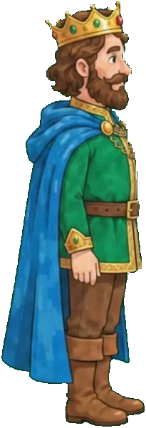
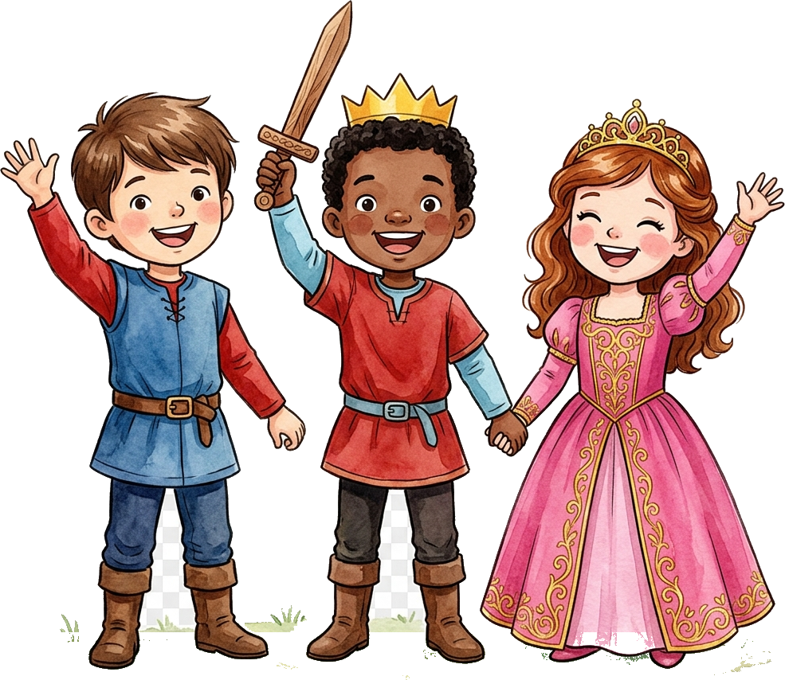

O Castelo Sem Cores
Em meio às ruínas do silêncio, a busca pelo amor recomeça.
Todos correram juntos.
Azul, vermelho, verde, rosa e dourado agora vivem no mesmo castelo. Uma família nasce do amor, do cuidado e do afeto — e nenhum caminho precisa ser percorrido sozinho.

Rei & Rainha • Em Busca de Amor e Família
O Castelo do Coração
Sinfonia das Cores • Edição Artística
Uma jornada contemplativa e poética inspirada na estética de GRIS e na história do livro O Castelo que Nasce do Coração.
Controles de Teclado:
A D ou ← → Mover com Inércia |
ESPAÇO ou W Pular (Na parede: aperte de novo para Pulo na Parede / Segure no ar para Planar) |
S ou ↓ Segurar no solo: Ancorar contra Vento / No ar: Heavy Slam |
J Pintar Pontes (Matheus) |
K Cantar para Flores (Maria Rosa) |
C ou TAB Trocar Personagem